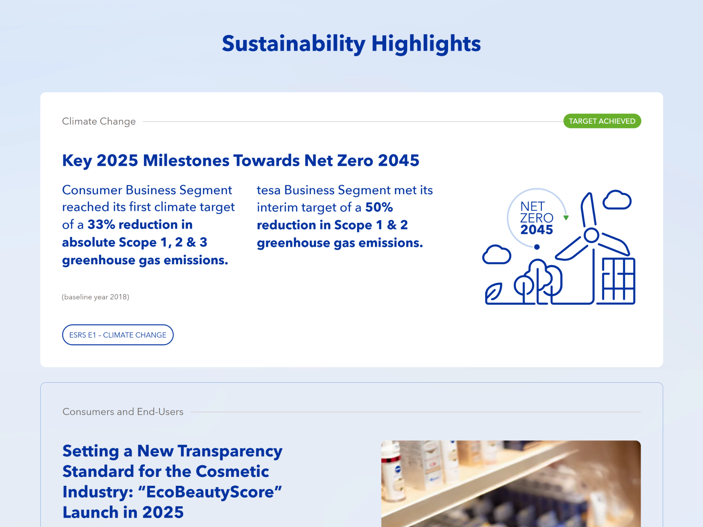
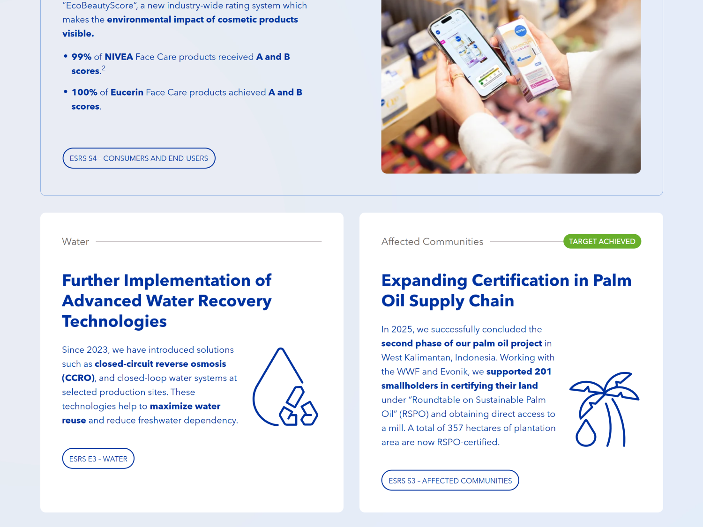

As Lead Designer for Beiersdorf's annual report over three reporting years, I worked closely with the Corporate Communications team to highlight the company’s successes and goals and to translate complex financial and sustainability information into a clear and engaging experience across digital and print.
I developed a shared visual language and design system for both formats, creating a consistent experience for investors, media, employees and other stakeholders. Over three years, I evolved into a more digital-first experience, introducing new features with each edition.

Beiersdorf traditionally used a printed magazine chapter to tell stories beyond mandatory reporting. But as reporting requirements grew, producing this additional editorial content became increasingly demanding for the communications team.
I led the shift from this print-first format to a digital-first storywall: a more flexible storytelling system designed to reduce production effort while making Beiersdorf’s stories accessible to a wider audience.


New sustainability reporting standards significantly increased the amount and complexity of mandatory content. The challenge was to help readers quickly understand what matters—and easily access the detail when they need it.
For the 2025 report, I designed a modular sustainability dashboard that brings key topics and targets into one clear overview, with direct paths into the underlying content and the flexibility to evolve with future reporting requirements.


Outcome
What began as a print supplement grew into a digital-first product — lighter to produce, easier to explore, and carried into every reporting cycle since.
Next
See all work